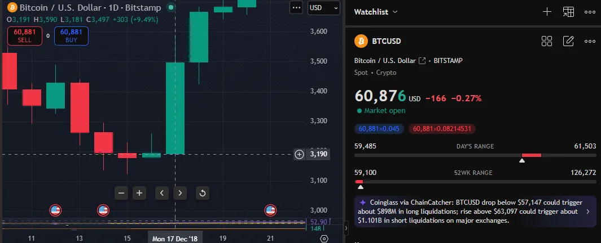

Yleensä kun nää suomalaiset mediat kirjoittaa että bitcoinin hinta laskee kuten Talouselämä teki 3.6 tulisi sinun ostaa bitcoinia, ja kun samat mediat alkaa kirjoittamaan bitcoinista ATH eli all time high hinnoissaan sun pitäisi myydä bitcoinisi, näin pääset voitolle pitkässä juoksussa koska DCA eli dollar cost average menetelmä on tehokas menetelmä tehdä voittoa. Ei tarvitse tietää neljän vuoden syklistä mitään tai tutustua sen kummemmin bitcoiniin, riittää että ostat kun media pelottelee sinua ja myyt kun media hehkuttaa bitcoinin hintaa.
Tässä on se tilanne nyt konkreettisesti, bitcoin saavutti all time highin lokakuussa 2025 hinnalla 128 198 dollaria ja tänä viikkona 5.6.2026 hinta on pyörinyt noin 62 000 dollarin tienoilla eli olemme laskeneet huipuista yli 50% ja media kirjoittaa romahduksesta, ja se on täsmälleen se hetki johon tämä artikkeli viittaa. Lasku kuulostaa pahalta mutta historia kertoo eri tarinaa niille jotka osaavat lukea sitä oikein.
Miksi media haluaa sinun pelkäävän
Tässä on asia jonka sinun täytyy ymmärtää mediasta, media tienaa klikkauksia ja klikkauksia tulee parhaiten pelolla ja shokilla, sama pätee bitcoiniin kuin kaikkeen muuhunkin mitä media käsittelee. Kun bitcoin laskee otsikot ovat dramaattisia ja täynnä sanoja kuten romahdus, kriisi ja kaatuminen, kun bitcoin nousee otsikot ovat täynnä sanoja kuten kupla, varoitus ja riski. Molemmat otsikot palvelevat saman tarkoituksen eli saada sinut klikkaamaan ja pysymään poissa markkinoilta tai myymään väärässä kohdassa.
Todellisuus on se että jokainen iso lasku bitcoinin historiassa on ollut osta-tilaisuus niille jotka ovat malttaneet pitää päänsä kylmänä, 2018 bitcoin laski yli 80% huipuistaan ja jokainen media julisti sen kuolleeksi, 2022 sama toistui kun hinta romahti alle 17 000 dollarin ja taas media kirjoitti hautajaisia, ja kuitenkin molemmat kerrat palkittiin niille jotka ostivat eikä myyneet.
Muista että Talouselämä ennusti 17.12.2018 että bitcoinin loppu häämöttää kun BTC:n hinta oli tuolloin 3 191 dollaria, normaalia pelottelua joka olisi ollut täydellinen ostopaikka kenelle tahansa joka ei kuunnellut mediaa vaan katsoi historiaa.

Mitä DCA tarkoittaa käytännössä
DCA eli dollar cost averaging tarkoittaa yksinkertaisesti sitä että ostat bitcoinia säännöllisesti kiinteällä summalla riippumatta siitä mikä hinta on sillä hetkellä, esimerkiksi 50 euroa joka kuukausi samana päivänä oli hinta mikä tahansa. Tämä poistaa sen suurimman virheen jonka ihmiset tekevät eli markkinoiden ajoittamisen, kukaan ei tiedä milloin on täsmälleen alin pohja eikä kukaan tiedä milloin on täsmälleen ylin huippu, mutta se ei haittaa DCA-strategiassa koska ostat sekä halvalla että kalliilla ja keskihinta tasoittuu ajan mittaan.
Motley Fool analysoi DCA-strategian tuloksia ja totesi että 10 dollarin viikkosijoitus bitcoiniin vuosina 2019–2024 muutti 2 610 dollarin kokonaissijoituksen noin 7 900 dollariksi eli yli 200% tuotto viidessä vuodessa, ja vuoteen 2026 mennessä jokainen yli kolmen vuoden DCA-ikkuna bitcoinissa vuodesta 2013 lähtien on päättynyt voitollisena. Tämä ei ole lupaus tulevasta mutta se kertoo jotain siitä miten strategia on toiminut historiallisesti.
Se psykologinen etu DCA:ssa on myös se että se poistaa sen tunnelatauksen päätöksistä, kun ostat automaattisesti joka kuukausi samalla summalla sinun ei tarvitse miettiä onko nyt hyvä hetki vai ei, et panikoi kun hinta laskee koska tiedät että saat sen kuukauden ostoksesi halvemmalla, etkä menetä yöuniasi kun hinta nousee koska tiedät että olet ollut markkinoilla jo pitkään.
Neljän vuoden sykli ja mitä se tarkoittaa

Bitcoinissa on historiallisesti nähty neljän vuoden sykli joka liittyy niin sanottuun halvingiin eli puolittumiseen, tämä tarkoittaa sitä että noin neljän vuoden välein uusien bitcoinien tuotantonopeus puolittuu ja tämä on vaikuttanut hintaan merkittävästi koska tarjonta pienenee mutta kysyntä jatkaa kasvuaan. Viimeisin halving tapahtui huhtikuussa 2024 ja seuraava on odotettavissa keväällä 2028.
Sinun ei tarvitse ymmärtää kaikkea tästä mekaniikasta jotta DCA-strategia toimii sinulle, riittää että ymmärrät yhden asian, bitcoin on jokaisessa syklissä saavuttanut uuden all time highin edelliseen verrattuna ja sen jälkeen laskenut merkittävästi ennen seuraavaa nousua. Se media joka nyt kirjoittaa romahduksesta on sama media joka kirjoitti romahduksesta edellisellä kerralla ja sitä edellisellä, ja silti jokainen niistä osoittautui osto-ikkunaksi pitkällä tähtäimellä.
Bitcoinin maksimimäärä on 21 miljoonaa kolikkoa eikä sitä voi muuttaa, tällä hetkellä liikkeellä on noin 19,8 miljoonaa bitcoinia eli uusia voi syntyä enää vajaa 1,2 miljoonaa. Tämä niukkuus on se perustekijä joka erottaa bitcoinin mistä tahansa fiat-valuutasta jota keskuspankki voi painaa rajattomasti lisää, ja se niukkuus ei katoa mihinkään vaikka hinta laskisi puolella.
Mitä sinun pitää muistaa
Tämä ei ole sijoitusneuvo eikä lupaus mistään, bitcoin on volatiili omaisuuserä ja sen arvo voi laskea merkittävästi myös pitkällä aikavälillä, sijoita vain sen verran kuin olet valmis menettämään kokonaan koska se riski on aina olemassa. Mutta jos aiot joka tapauksessa sijoittaa bitcoiniin niin DCA on yksinkertaisin ja psykologisesti helpoin tapa tehdä se, koska se poistaa sen päivittäisen stressin siitä onko hinta nyt liian korkea tai liian matala ja antaa ajan tehdä työn puolestasi.
Seuraavan kerran kun näet Talouselämän tai Iltalehden otsikon jossa lukee että bitcoin romahdus jatkuu muista tämä artikkeli, koska se otsikko ei kerro sinulle mitä tehdä, se kertoo sinulle mitä media haluaa sinun tekevän.
Artikkelin kuvassa on bitcoinin kaavio tradingview palvelusta, kartassa on 1 kuukauden kynttilät, voit seurata bitcoinin hintaa tradingview palvelusta.